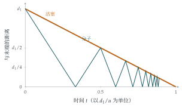

STEP I 2002，第 10 题
继续之前，请先阅读题目（原题为英文）。题目载于 STEP Support Programme 的题目资料库： step.maths.org/questions/02-s1-q10
引子
替单车轮胎打气时摸一摸气泵：它会发热。压缩气体会令气体变暖，柴油引擎（单靠压缩就能点燃燃料）、雪柜以至恒星的形成，背后都是这个原理。但为甚么压缩会令气体升温？温度就是分子的平均动能（kinetic energy），所以问题其实是：为甚么分子会加速？
这道题目只用一个分子就回答了这个问题。分子每次从推进中的活塞（piston）反弹，都会多得一点速率，就像网球碰上挥动中的球拍一样。把每次反弹准确地追踪下去，便会发现一条隐藏的定律：分子的速率乘以气缸的长度，几乎保持不变。这就是一个绝热不变量（adiabatic invariant），也是你在物理课遇到的气体定律在微观层面的来源。
动笔之前
一个以速率 \(w\) 运动的球，撞上一堵以速率 \(u\) 迎面移来的墙，并作弹性（elastic）反弹。反弹后球的速率是多少？（试在墙的参考系中思考。）
在墙的参考系（frame）中，球以 \(w + u\) 接近；由于它是从一个极重的物体上弹性反弹，所以亦以 \(w + u\) 离开。回到地面参考系，墙正以 \(u\) 朝着与反弹后的球相同的方向运动，所以球的速率是 \(w + 2u\)。每次从推进中的活塞反弹，速率都增加 \(2u\)。（从气缸静止的一端反弹，则甚么也不会改变。）
逐步解题
阶段 1 反弹 \(n\) 次后的速率
质点（particle）起初的速率是 \(v\)。每次与活塞碰撞（collision），速率增加 \(2u\)，而与末端碰撞则不会改变速率。所以与活塞碰撞 \(n\) 次之后， \[v_n = v + 2nu. \qed\]
阶段 2 长度的递推关系
在第 \(n\) 次与第 \((n+1)\) 次碰撞之间，质点由活塞走到末端再折返。它走了多远？活塞又移动了多远？
在时间 \(t_n\) 内，活塞移动了 \(ut_n\)，所以 \(d_n - d_{n+1} = ut_n\)。与此同时，质点以速率 \(v_n\) 由活塞走到末端（距离 \(d_n\)），再返回活塞（距离 \(d_{n+1}\)），所以 \(d_n + d_{n+1} = v_nt_n\)。把两条方程相除，便可消去 \(t_n\)： \[\frac{d_n + d_{n+1}}{d_n - d_{n+1}} = \frac{v_n}{u}, \qquad\text{所以}\qquad d_{n+1}(v_n + u) = d_n(v_n - u).\] 代入 \(v_n = v + 2nu\)，得 \[d_{n+1} = \frac{v + (2n - 1)u}{v + (2n + 1)u}\,d_n. \qed\] 这就是所求的递推关系（recurrence）。
阶段 3 裂项相消
把 \(d_n\) 写成 \(d_1\) 乘以 \(n - 1\) 个这样的分数之积。哪些项会互相抵消？
\[d_n = d_1 \cdot \frac{v + u}{v + 3u}\cdot\frac{v + 3u}{v + 5u}\cdots\frac{v + (2n - 3)u}{v + (2n - 1)u} = \frac{v + u}{v + (2n - 1)u}\,d_1. \qed\] 每个分子都与前一个分母抵消，只剩下第一个分子和最后一个分母。
阶段 4 \(v = u\) 的情况
这时 \(d_n = \frac{2u}{2nu}d_1 = \frac{d_1}{n}\)，而 \[ut_n = d_n - d_{n+1} = d_1\Bigl(\frac1n - \frac{1}{n + 1}\Bigr) = \frac{d_1}{n(n + 1)}. \qed\] 把这些加起来，\(u(t_1 + t_2 + \cdots) = d_1\bigl(1 - \frac12 + \frac12 - \frac13 + \cdots\bigr) = d_1\)：活塞在第一次碰撞后经过时间 \(d_1/u\) 到达气缸末端，这正是理所当然的结果。在活塞到达之前，质点反弹了无限多次（图 10.4.1）。

回顾
处理碰撞时转换参考系。在活塞的参考系中，反弹再简单不过。
两条方程，消去未知量。质点与活塞在同一段时间内所走的距离，给出了一个不含 \(t_n\) 的递推关系。
裂项相消（telescoping）。那个乘积一下子化简了，正如 \(\frac{1}{n(n+1)}\) 之和一样。
背后的数学
一个绝热不变量
把速率乘以长度： \[v_n d_n = (v + 2nu)\cdot\frac{v + u}{v + (2n - 1)u}\,d_1 \approx (v + u)d_1\] 这在 \(n\) 很大时成立，在 \(u\) 远小于 \(v\) 时亦然。所以 \[\text{速率} \times \text{长度} \approx \text{常数}.\] 如果活塞相对于分子移动得很慢，那么无论活塞移动多远，乘积 \(vd\) 都几乎不变。像这样在系统缓慢改变时几乎保持不变的量，称为绝热不变量。一般而言，往复运动的绝热不变量是 \(\oint p\,\mathrm{d}q\)，即动量（momentum）沿一个周期的积分；在这里它就是 \(mv \times 2d\)。
从一个分子到一团气体
由于 \(v \propto 1/d\)，动能 \(\frac12mv^2\) 与 \(1/d^2\) 成正比。对于由许多沿同一方向运动的分子组成的气体，温度与平均动能成正比，所以 \(T \propto 1/d^2\)：长度减半，温度便变成四倍。在三维空间中，能量由三个运动方向分担，而同样的论证（费曼（Feynman）在他的Lectures中给出了这个论证）可推出单原子气体（monatomic gas）的绝热压缩定律， \[TV^{2/3} = \text{常数}, \qquad\text{或等价地}\qquad pV^{5/3} = \text{常数}.\] 指数 \(\frac53\) 就是单原子气体著名的比热比（ratio of specific heats）\(\gamma\)。把单车气泵内的空气压缩至原来体积的五分之一，如果做得够快而且没有热量散失，其绝对温度会升高至原来的 \(5^{0.4} \approx 1.9\) 倍（空气分子有两个原子，因而 \(\gamma = 1.4\)）：由 \(20^\circ\)C 升至约 \(280^\circ\)C。气泵之所以没有那么热，只是因为压缩得慢，热量又会散走。
1949 年，恩里科·费米（Enrico Fermi）提出，宇宙射线（cosmic rays）这些从太空而来、能量极高的粒子，其加速方式与本题的分子如出一辙：它们在星际气体云中运动的磁场上反复反弹，每次获得一点能量。现时认为，“费米加速”（Fermi acceleration）在超新星残骸的激波处发生，粒子在那里来回穿越激波，就像分子在活塞与墙壁之间往返一样。绝热不变量在量子力学的诞生中也扮演过一个角色：保罗·埃伦费斯特（Paul Ehrenfest）在 1916 年指出，被量子化的量必定是绝热不变量，因为缓慢的改变不可能令系统在量子态之间跃迁。
思维技巧
当一个过程不断重复时，把其中一个周期准确地描述出来，并写下状态怎样由一个周期变到下一个周期。
这里的状态是每次碰撞时的一对量（速率，长度）。这个递推关系可以精确地解出，而它的解揭示了一个近似守恒的量。在大学里，同样的方法（先考虑一个周期，然后得出递推关系或“回归映射”（return map））会用于轨道、振子，以及 第 8.7 节 的迭代映射。
延伸练习
不变量的精确形式。证明 \(v_nd_n - (v + u)d_1 = \frac{u(v + u)d_1}{v + (2n - 1)u}\)，并由此推出当 \(n \to \infty\) 时 \(v_nd_n \to (v + u)d_1\)。
把活塞拉出。设活塞改为以速率 \(u < v\) 向外抽出，把题目重做一次。证明质点会减速，并求 \(v_nd_n\)。（气体膨胀时会冷却。）
能量。在 \(v = u\) 的情况下，随着活塞逼近末端，分子的速率会无止境地增长。求第 \(n\) 个周期内活塞所受的平均力（动量的改变除以 \(t_n\)），并证明它按 \(n^3\) 的速度增长。这说明了把活塞一直推到尽头所需的功有甚么特点？
弹跳的球。一个球在重力作用下于地板上作弹性弹跳，而地板被缓慢地升高。试猜出这个运动的一个绝热不变量。（提示：与 \(vd\) 相对应的量是平均速率乘以弹跳的高度，或等价地，能量乘以两次弹跳之间的时间。）
延伸阅读
Richard Feynman, Robert Leighton & Matthew Sands, The Feynman Lectures on Physics, Vol. I（《费曼物理学讲义》第一卷，可在网上免费阅读），第 39 章“The kinetic theory of gases”（气体动力论）。同一个活塞论证，并推广至三维。
Stephen Blundell & Katherine Blundell, Concepts in Thermal Physics（Oxford University Press）。大学一年级程度的绝热过程与气体动力论。
Lev Landau & Evgeny Lifshitz, Mechanics（Butterworth-Heinemann），§49。对绝热不变量的精简论述，留待日后阅读。